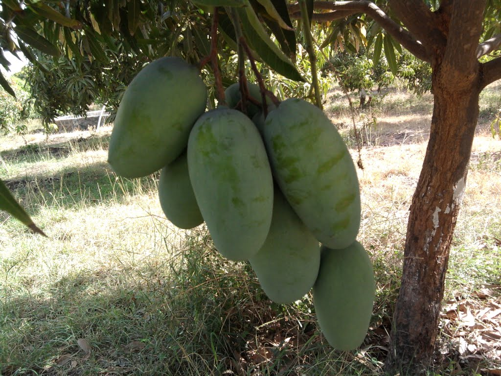

Speciality of mango cultivation in Odisha is very unique due to varietal reasons. A number of varieties are cultivated in various parts of Odisha. The agroclimatic
condition of the State is very much conducive for successful cultivation of mango.
Mango (Mangifera indica), the King of fruits is grown in India for over 400 years. It is the most delicious fruit and available in various colour, taste, shape and size. It is a part and parcel of life being associated with its all phases right from birth to death.From nutritional point of view it is proved to be rich in vit- A, vit-C, protein, carbohydrate, calcium,phosphorus& Iron. It is grown in almost all the states of India where India shares about 56% of total mango production in the world and more than 1000 mango varieties are available in India.
The soil & climate of Orissa is very much congenial for the cultivation of mango crop. It enjoys the climatic advantage of growing of both North and South Indian varieties successfully. More than 300 mango varieties exist in the State of Orissa.


Mango (Mangifera indica), the King of fruits is grown in India for over 400 years. It is the most delicious fruit and available in various colour, taste, shape and size. It is a part and parcel of life being associated with its all phases right from birth to death.From nutritional point of view it is proved to be rich in vit- A, vit-C, protein, carbohydrate, calcium,phosphorus& Iron. It is grown in almost all the states of India where India shares about 56% of total mango production in the world and more than 1000 mango varieties are available in India.
The soil & climate of Orissa is very much congenial for the cultivation of mango crop. It enjoys the climatic advantage of growing of both North and South Indian varieties successfully. More than 300 mango varieties exist in the State of Orissa.
